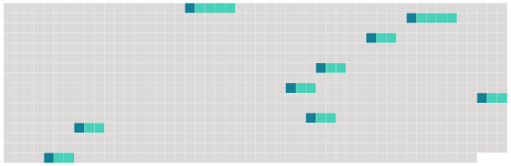

Longueur nb maillons : 9 mentions |
|
Si l'absent a laissé une procuration ses héritiers présomptifs ne pourront poursuivre la déclaration d'absence et [l'envoi en possession provisoire] qu'après dix années révolues depuis sa disparition ou depuis ses dernières nouvelles. [3 phrases]
Lorsque les héritiers présomptifs auront obtenu [l'envoi en possession provisoire] , le testament, s'il en existe un, sera ouvert à la réquisition des parties intéressées, ou du commissaire du Gouvernement près le tribunal ; et les légataires, les donataires, ainsi que tous ceux qui avaient sur les biens de l'absent, des droits subordonnés à la condition de son décès, pourront les exercer provisoirement, à la charge de donner caution. [1 phrases] L'époux commun en biens, s'il opte pour la continuation de la communauté, pourra empêcher [l'envoi provisoire] et l'exercice provisoire de tous les droits subordonnés à la condition du décès de l'absent, et prendre ou conserver par préférence l'administration des biens de l'absent. [5 phrases]
Ceux qui auront obtenu [l'envoi provisoire] , ou l'époux qui aura opté pour la continuation de la communauté, devront faire procéder à l'inventaire du mobilier et des titres de l'absent, en présence du commissaire du Gouvernement près le tribunal de première instance, ou d'un juge de paix requis par ledit commissaire. [2 phrases] Ceux qui auront obtenu [l'envoi provisoire] , pourront requérir, pour leur sûreté, qu'il soit procédé par un expert nommé par le tribunal, à la visite des immeubles, à l'effet d'en constater l'état. [2 phrases]
Ceux qui par suite de [l'envoi provisoire] , ou de l'administration légale, auront joui des biens de l'absent, ne seront tenus de lui rendre que le cinquième des revenus, s'il reparaît avant quinze ans révolus depuis le jour de sa disparition ; et le dixième, s'il ne reparaît qu'après les quinze ans. [2 phrases]
Tous ceux qui ne jouiront qu'en vertu de [l'envoi provisoire] , ne pourront aliéner ni hypothéquer les immeubles de l'absent. [1 phrases]
Si l'absence a continué pendant trente ans depuis [l'envoi provisoire] , ou depuis l'époque à laquelle l'époux commun aura pris l'administration des biens de l'absent, ou s'il s'est écoulé cent ans révolus depuis la naissance de l'absent, les cautions seront déchargées ; tous les ayant-droit pourront demander le partage des biens de l'absent, et faire prononcer l'envoi en possession définitif par le tribunal de première instance. [3 phrases]
Si l'absent reparaît ; ou si son existence est prouvée pendant [l'envoi provisoire] , les effets du jugement qui aura déclaré l'absence, cesseront ; sans préjudice, s'il y a lieu, des mesures conservatoires prescrites au chapitre Ier du présent titre, pour l'administration de ses biens. |
 |
Il est possible de télécharger la ressource sur la page Ortolang |
Si vous avez des questions ou vous voyez des erreurs, merci d'envoyer un mail à silvia.federzoni89@gmail.com |